User guide
Scry
One place where every team shares what it's building or thinking about, so you find related work before you start, and two teams don't build the same thing.
1Getting around
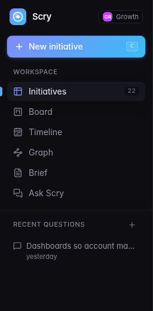
- New initiative is the main action, at the top of the sidebar.
- Initiatives, Board, Timeline, Graph are four ways to look at the same work.
- Brief is a one-page summary for leadership.
- Ask Scry answers questions such as "is anyone already doing this?". Your recent questions are listed below it.
- Jump to… (top of the page, or ⌘ K) finds any initiative, team or page. Anything you type there can also go to Ask Scry.
Every page, filter and open initiative is in the address bar, so you can share a link to exactly what you see.
New to Scry? A short tour starts on your first visit. Replay it any time from the Help button at the top right, which also opens this guide and the keyboard shortcuts.
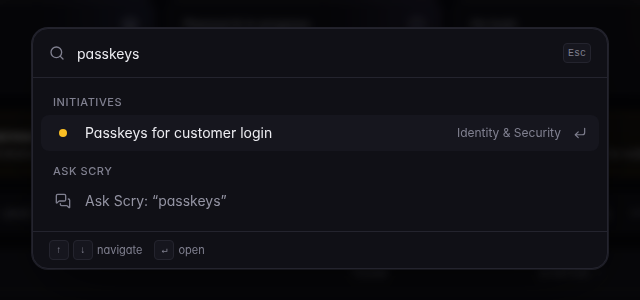
2Add an initiative
Click New initiative or press C. An initiative can be an idea or work already under way. Register it early, when it's still cheap to join forces.
It's filed under your team with you as the contact; admins can choose another team.
Let AI fill it in
Describe the idea in your own words and click Draft. Scry fills in the title, summary, tags and tier using only what you wrote, and reuses tags your organisation already uses. Undo puts the form back, and Stop cancels a draft that's taking too long.
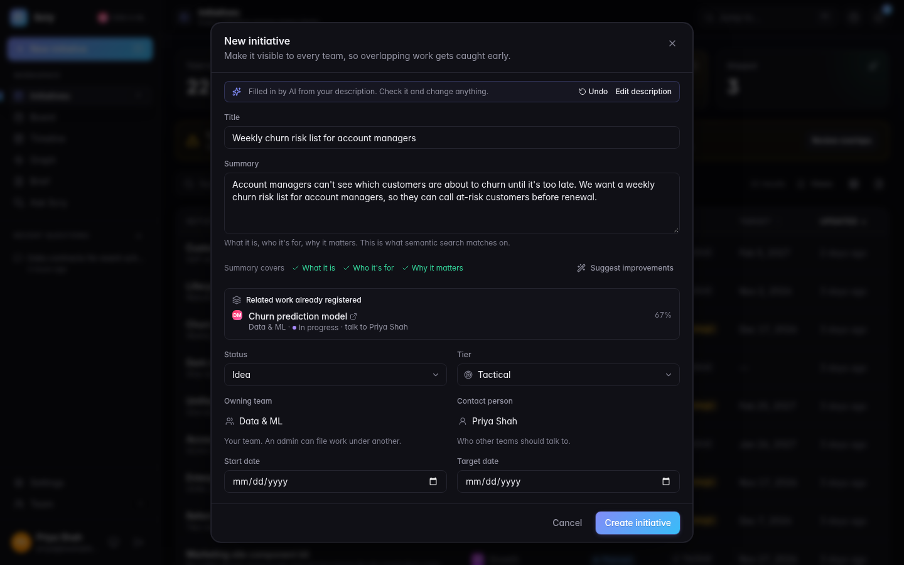
Check it's new
As you type, Scry looks for similar work other teams have registered. A close match shows the team, its status and who to talk to. If it's the same thing, talk to them before building a second one. You can still create yours if it's different.
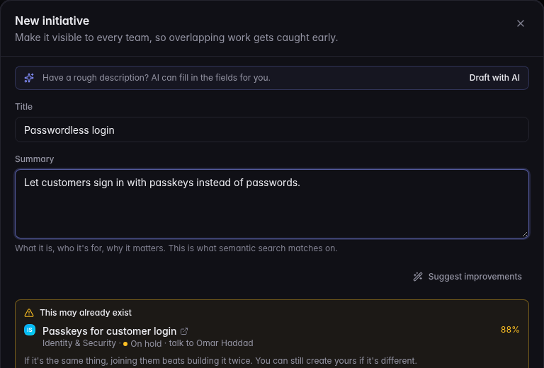
Make it clearer
Suggest improvements reviews what you wrote and proposes a clearer title, summary, tier or missing tags. Nothing changes until you click Use.
The TL;DR
Every initiative gets a one-line TL;DR, written by AI, saying what it is and where it stands: on hold and why, which other teams build on it, and who else needs it. It updates when those change. You'll see it at the top of the details panel and in lists.
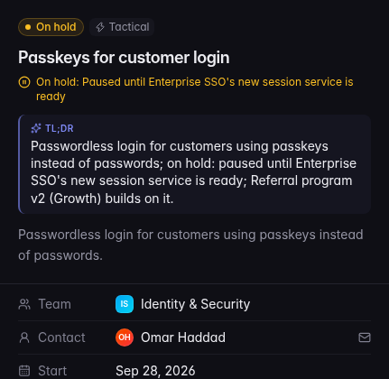
3Ask Scry before you build
Describe an idea in plain words, as you would to a colleague. Scry follows the whole conversation: it searches when you describe an idea or change it, answers questions about what it found, and shows what it's doing as it works. It searches every team's work by meaning, not just keywords, shows what it searched for under the answer, and answers with one of three outcomes:
- Strong match: it already exists. Scry names the team and the person to talk to.
- Related: something similar exists. Check it, then register yours if it's different.
- Nothing found: click Register this idea and Scry drafts it from the conversation.
Once Scry has searched for your idea you can register it; it offers Register this idea when the idea is clear, or whenever you ask. If it's still vague, Scry asks what would change and for whom, but it's your call.
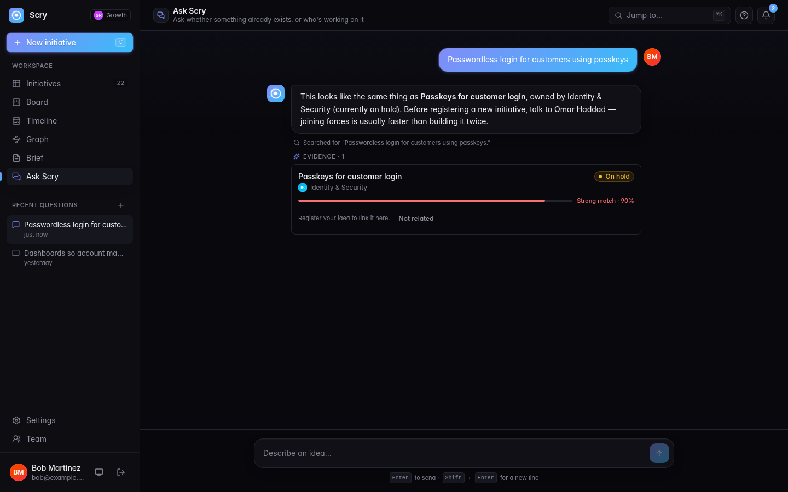
4Overlaps and demand
Possible duplicates
When two teams' initiatives look like the same work, both are flagged with a possible overlap card. Choose one:
- Related, not the same if they're different work the two teams should know about.
- Merge the duplicate into the one that carries on. Its history, followers and links move across. Only a flagged duplicate can be merged. If the one that carries on isn't yours, this asks its owners and team admins: they see Merge and Decline on it, and nothing changes until one of them accepts. You can Withdraw the request meanwhile. Admins merge straight away. Either way, both teams are notified.
- Not a duplicate, if they only look alike.
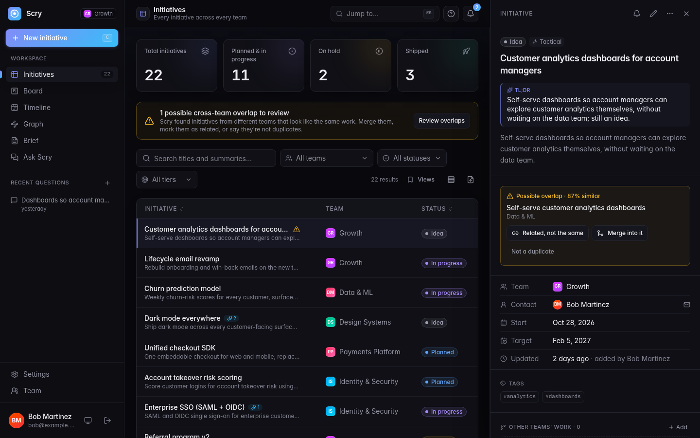
"We need this too"
If another team's initiative matters to you, open it and click We need this too, with a short note on why. Work that several teams need is worth building once, together, and it shows up in the brief. A request nobody has confirmed for six months fades there; Still needed confirms it.
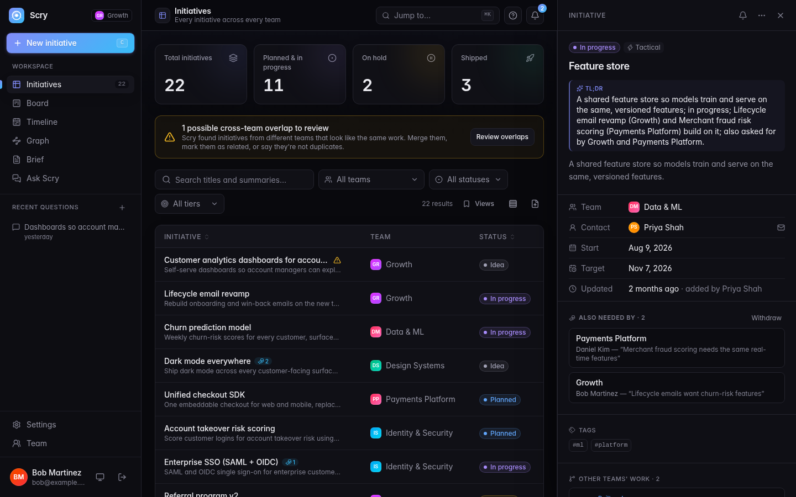
Other teams' work
In an initiative's details, Add under Other teams' work says how it connects to another team's initiative: it builds on it, replaces it, or is related. These tell teams who to talk to; they don't say what waits on what, which stays in each team's own tracker. Relationships always connect different teams, and there's one per pair.
If work is paused, set its status to On hold and say why. Teams that build on it see the reason.
5Views
| View | Use it to |
|---|---|
| Initiatives | Search and filter everything. Sort by title, status, target date or last update by clicking the column name; long lists load 50 at a time with Load more. Save a filtered view to the sidebar with Views, and switch to compact rows to see more at once. |
| Board | See work by status or by team. Drag your own cards to change their status (Alt + arrow keys work too), with Undo. Busy columns show the first 50; use Show more for the rest. |
| Timeline | See who ships what, and when. Overlapping work that also overlaps in time is highlighted. |
| Graph | The whole organisation as a map: one circle per team, sized by its work, with a line where teams' work is related (hover a line to read it). Zoom in, or click a team, and its circle opens to show its initiatives, with work related to other teams on the edge facing them. Use Go to an initiative or Or go to a team to jump there, or search by meaning. A very big team shows its 200 most connected and recent initiatives; the Initiatives list has the rest. |
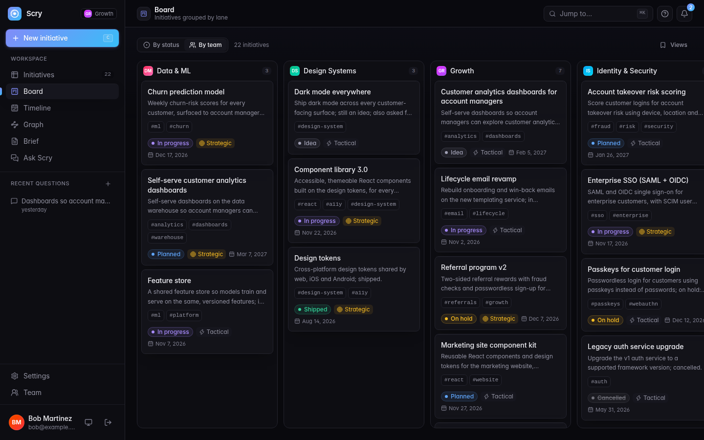
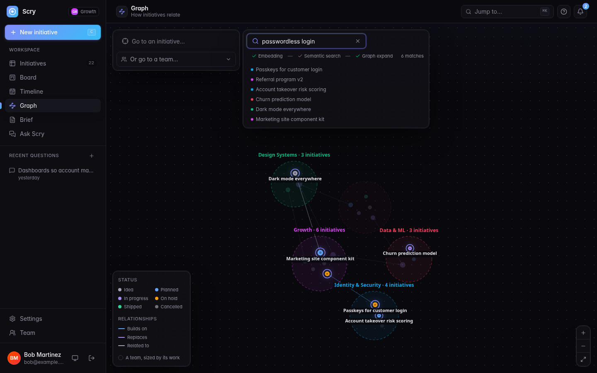
Click any initiative to open its details on the right. Drag the panel's edge to make it wider.
6The brief
Brief is one page for leadership on what needs a decision: possible duplicates, work several teams want that nobody has picked up, work others build on that is on hold or has gone quiet, the themes teams are starting on separately, and what changed. Choose a period and, if you like, one part of the organisation.
- The summary at the top and every figure come straight from the data, with or without AI.
- Reword with AI rewrites the summary. Each point links to the initiatives behind it. Check it before you share it.
- Print or save PDF for a clean document, or Copy as text for an email.
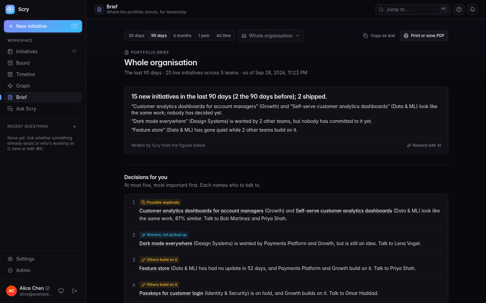
7Staying up to date
- The bell is your inbox: overlaps with your work, other teams building on it, merges and requests to merge into your work, comments, status changes and "we need this too".
- Follow a team, a tag or a single initiative (the bell icon on an initiative, or Settings → Following) to hear about it too.
- Each initiative has a Discussion for comments and a History of every change.
- Settings → API tokens gives you a token for scripts. Tokens are read only unless you choose Read and write.
Ask Scry from your AI tools
Once an admin turns it on, you can ask Scry from Claude, Cursor, VS Code and other AI assistants and coding agents, as yourself and read only: "is anyone already building this?", "what is Payments working on?". Settings → AI tools shows the address. In Claude Code:
claude mcp add --transport http scry https://<your scry api>/mcpIn other tools, add a remote (HTTP) MCP server with that address. The first time, the tool opens Scry: sign in and click Allow read access. It can search and read initiatives, teams, relationships and the brief, but never change anything. What it asks is logged with your name for your admins, and you can Disconnect it any time in Settings. A tool that can't sign in this way can send a read-only API token instead.
8Your team
The first time you sign in, ask to join your team, or create a team (choosing its org unit and country from your organisation's list). While you wait, you can look around but not change anything; a banner says what you're waiting for, and Withdraw lets you choose again.
- A team's team admins let people in. An admin approves new teams.
- If you created the team, you're its first team admin. Team admins see a Team page in the sidebar, with a count of people waiting.
- On the Team page: let people in or decline them, remove members, make others team admins (a team keeps at least one), and see the team's audit log.
- Team admins can edit any of their team's initiatives.
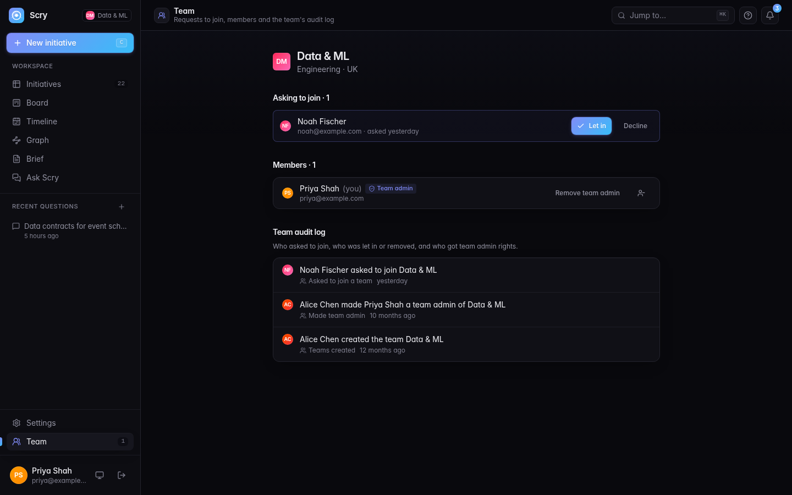
9For admins
Admins aren't in a team: they see and run everything. The Admin page has a setup checklist until the basics are done. When an admin adds an initiative, they choose its owner, and it goes to that person's team.
- AI & models: connect an AI provider (any OpenAI-compatible endpoint), pick a model for each job, and click Test connection. Without a model, Scry still works, but Ask Scry, duplicate detection, the TL;DR and the AI writing help are off. Usage figures are on the same page.
- People: move people between teams, make someone a team admin, and make someone an admin. Keep at least two admins.
-
Teams: approve or decline new teams, decide requests to join, create
and rename teams, or merge two teams into one. Org units and countries come from the
ORG_UNITSandCOUNTRIESsettings. - AI tools: let people ask Scry from their AI assistants (MCP). It's off until you turn it on, because what Scry returns goes to that tool's AI provider. The same page shows who uses it, from which tools, every call (kept for 90 days by default), and can disconnect someone's tools.
- Import: bring in a roadmap from CSV or Jira.
- Audit log: who changed roles, teams, team admins, AI settings, AI tools, tokens and imports, and when.
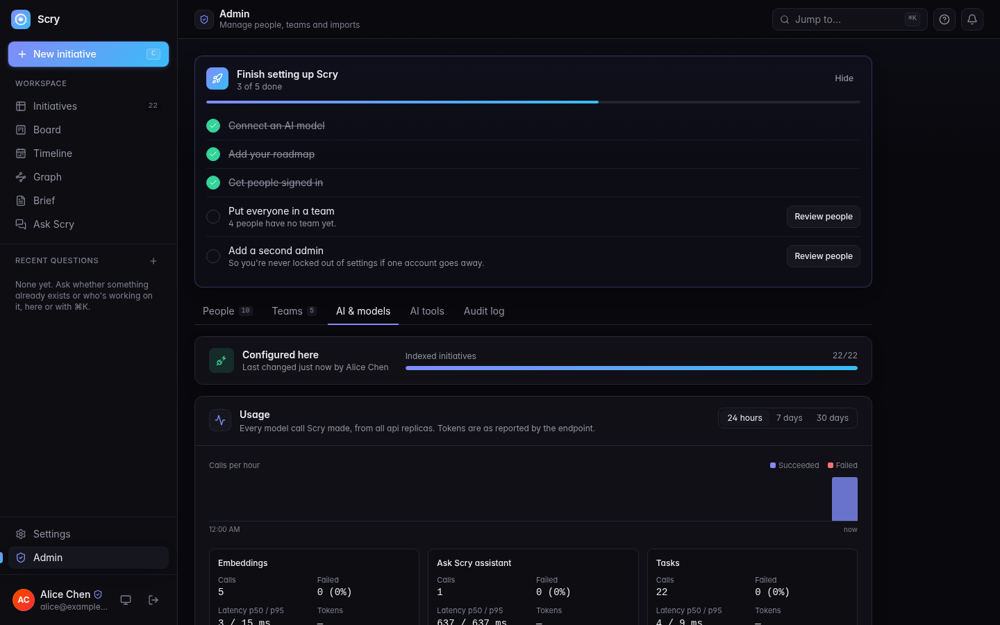
10Keyboard shortcuts
| Keys | Action |
|---|---|
| C | New initiative |
| ⌘ K or Ctrl K | Jump to an initiative, team or page, or ask Scry |
| ? | Show the keyboard shortcuts |
| Esc | Close the details panel or a dialog |
| ⌘ Enter | Draft with AI, in the New initiative form |
| Alt ← → | Move the selected board card to the next column |